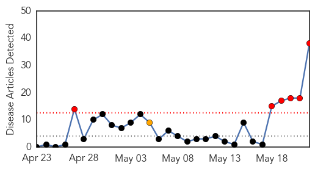

30 Day Trends
Web: 6 alerts, 1 warnings
Twitter: 0 alerts, 0 warnings
Top Articles:
- 0.988
- In Tanzania UN Working to Halt Cholera Outbreak Among Burundian Refugees
- 0.983
- In Tanzania, UNICEF working to halt cholera outbreak among Burundian refugees
- 0.980
- Tanzania: UNICEF works to halt cholera outbreak among Burundian refugees
- 0.965
- Cholera epidemic among refugee and host communities in Tanzania claims 31 lives, situation worsening
- 0.964
- UN says Burundi refugees cholera epidemic worsening
- 0.961
- Sh500m released for war on cholera - Kenya
- 0.959
- Cholera epidemic claims 31 lives in Tanzania, including 29 Burundian refugees
- 0.957
- Cholera epidemic claims 31 lives in Tanzania, including 29 Burundian refugees
- 0.952
- Cholera epidemic among refugee and host communities in Tanzania claims 31 lives, situation worsening
- 0.942
- Cholera epidemic claims 31 lives in Tanzania, including 29 Burundian refugees
- 0.933
- 3,000 Burundi refugees in Tanzania plauged by Cholera
- 0.930
- As cholera confirmed among Burnundian refugees in Tanzania, Oxfam delivers water and sanitation to reduce spread of disease
- 0.917
- Cholera strikes 3,000 Burundi refugees in Tanzania: UN
- 0.899
- 300-400 new cholera cases per day in Tanzania: UN
- 0.893
- Kenya : 300-400 new cholera cases per day among Burundians in Tanzania: UN
- 0.890
- Cholera Hits 3,000 Burundi Refugees in Tanzania
- 0.887
- Cholera hits 3,000 Burundi refugees in Tanzania
- 0.886
- Tanzania: UNICEF assists Burundian refugees hit by cholera outbreak
- 0.875
- Cholera in Burundi refugee camp worsening, over 31 dead
- 0.836
- Cholera Kills Burundian Refugees in Tanzania
- 0.820
- Cholera hits Burundi refugees in Tanzania
- 0.807
- Cholera epidemic hits 3,000 Burundi refugees in Tanzania - U.N.
- 0.802
- ACAPS Briefing Note: Tanzania: Displacement, 22 May 2015 - United Republic of Tanzania
- 0.782
- Cholera infects 3,000 Burundian refugees, UN calls for help
- 0.768
- 300-400 new cholera cases per day among Burundians in Tanzania: UN
- 0.760
- 300-400 new cholera cases per day among Burundians in Tanzania: UN
- 0.730
- Cholera outbreak hits 3,000 Burundi refugees
- 0.726
- Cholera infects 3,000 Burundian refugees, UN calls for help
- 0.722
- United Republic of Tanzania: Cholera epidemic claims 31 lives in Tanzania, including 29 Burundian refugee
- 0.688
- Cholera epidemic hits 3,000 Burundi refugees in Tanzania
- 0.658
- 3 000 Burundi refugees hit by cholera - Africa
- 0.646
- Civilians in South Sudan without relief as aid-workers stuck in camps
- 0.645
- The Sun Village: center of assistance and support for children in need
- 0.607
- Cholera infects 3,000 Burundian refugees; UN call for help
- 0.591
- Burundian refugees face cholera threat in Tanzania
- 0.588
- Cholera infects 3,000 Burundian refugees; UN call for help
- 0.584
- UNICEF Fighting To Halt Cholera Outbreak In Tanzania Among Burundian Refugees
- 0.522
- Cholera epidemic hits 3,000 Burundi refugees in Tanzania: U.N.
Top Tweets:
-
No tweets found for May 22, 2015
Web/News Articles
Tweets

Article Locations

Article Confidences